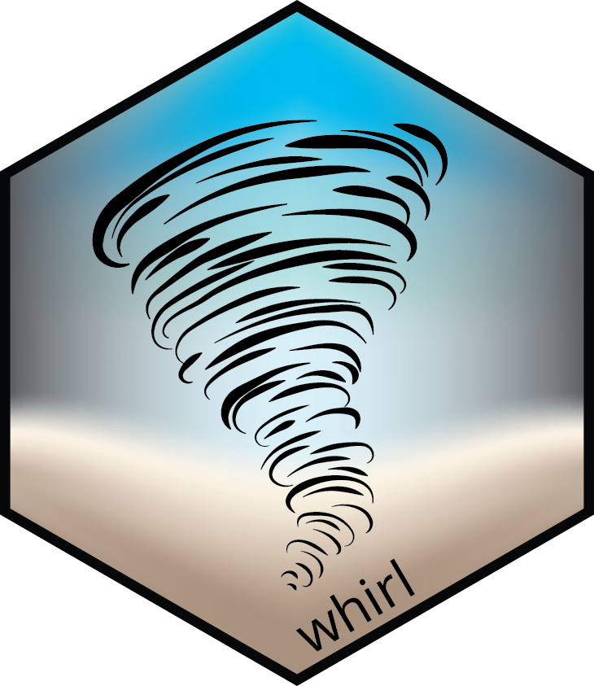

Changelog
Source:NEWS.md
whirl 0.1.4 (2024-11-01)
- Add
use_whirl()utility function.
whirl 0.1.3 (2024-10-23)
- Adding additional arguments to
run()allowing the user to:- control the verbosity level
- specify whether renv should be checked
- specify which files to track
- adjust the output format of the log files.
whirl 0.0.4 (2024-09-24)
- Adjusting
run()to unify execution of scripts, lists of scripts, and configuration files. - Using multiple independent
callr::r_sessionwhen executing several scripts. - Cleanup of namespace and exported functions.
whirl 0.0.3 (2024-08-26)
- Initial commit of
run(). - Substituting spinner with progress bar when executing single scripts.